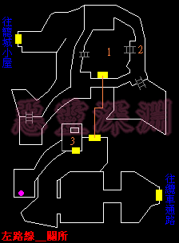
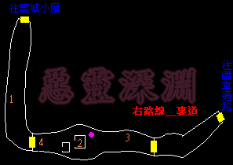
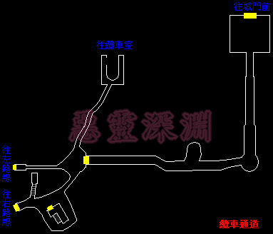
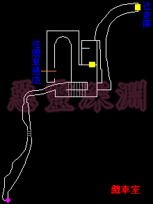
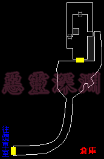

|
惡靈古堡～惡靈古堡４----地圖攻略～2-3
|
|
攻略內容以Normal為主，地圖上的紫色圓點●表示高價寶物的位置 ，標綠色的道具則是過關必須的重要道具。
大戰過後，屋裡還沒回收的道具記得去回收。屋外武器商人移動了位置 。 購物指南（new）：
之前沒有射擊藍色錢幣領取武器商人獎品的玩家，現在開始也可以購買到制裁者。 打字機小屋中有File左右的路徑配置。由File中得知，村民都集中在左邊路徑，而右邊路徑有巨人艾爾希剛特。玩家必須選擇一條 路，以帶著Ashley的情況，左邊的路不用擔心Ashley，而且敵人是村民和電鋸姐妹，路線單純；右邊的路雖然會碰上巨人，可是巨人 是不一定要打倒的，想要快速過關的玩家可以選擇右邊。 兩條路線都有高價寶物，若是想要挑戰的玩家，可以在通過一條路線之後，回到此處去通過另一條路線。 左路線─往關所，右路線─往裏道。作好選擇後，調查閘門的開關，出發吧。
 左路線一開始就會遇到一批村人，先讓Ashley躲入紅色鐵箱內，附近有個油桶車可以利用，當玩家到達編號1的地方時，電鋸姐妹會 突然蹦出來，其中一個身上帶著鑰匙，必須要打倒，建議可以從編號2的地方跳下，引發兩姐妹出現後，立刻從對面的梯子上來， 找個適當的地點迎戰，避免被夾擊，同時也要小心其他的村民。若是油桶車還沒使用掉，跳下去後立刻從編號2的樓梯下來，從油 桶車上方跳下回到入口，引誘電鋸姐妹從油桶車上方的位置跳下，再引爆，之後只要在她們站起來時用來福槍讓她們倒下即可。從 電鋸姐妹身上拿到關所的鑰匙，打開編號1附近的門，在編號3的房間，將用木條封住的窗戶破壞，有一條路，底部有寶物仮面の宝 石＿橙（面具的寶石＿橙）；回到路上繼續往前，又有一波的村民攻擊，左路線到此為止。
 右路線前進一段路，巨人艾爾希剛特就出現了，Ashley提醒Leon上方有塊大石頭，射擊石頭，用石頭來攻擊巨人或是暫時擋住他的 去路，繼續前進時發現門被三條鎖鏈封閉，用小刀來破壞；編號2的小屋有古老的鑰匙，小屋外有寶物仮面の宝石＿紫（面具的寶 石＿紫），編號3的上方也有一塊大石頭，到通道底部使用古老的鑰匙，即可前往纜車通路了。 對於不想要打倒艾爾希剛特，卻想要安全拿到寶物的玩家，可以先通過裏道到纜車通路，然後回裏道，巨人的位置會在編號4的地 方，只要拼命往前跑，看到吊掛在上面的寶石時用槍射下，掉頭回到纜車通路，然後再一次進入裏道，往前跑拿取寶石後掉頭跑離 ，如果可以的話，順便回收被巨人破壞的小屋裡留下的道具。打倒巨人的話則有15000ptas。
 兩條路線在纜車通道會合，此處的小屋有些道具，還有File村落的最後防衛，找武器商人整理整理裝備，然後搭上纜車吧。
在搭纜車的過程中千萬不可大意，這個階段會受到的攻擊有二，一是左手邊高台上的村民，會在Leon乘坐的纜車經過時跳上纜車， 但並不是要攻擊，而是鋸斷纜車的鐵鏈，一旦被鋸斷，就會死亡，左邊的村民共有兩個，看到的話優先擊倒；另一個攻擊是從對向 來的纜車上，有村民丟擲武器，一台纜車上通常有一到三人，攻擊力也很強，而且會波及到Ashley。此處的敵人只要稍受到攻擊就 會墜落，所以無論是手槍、機關槍都可以，緊急的時候，就拿散彈槍出來攻擊吧。
 纜車室裡有道具，從樓梯下去有條通路，到底拿取寶物ステインの宝石＿黄（啤酒杯的寶石＿黃），然後往倉庫。
 BOSS戰： 在到達倉庫時，Leon似乎發現了什麼不對勁，一進倉庫，果然遇到村長的攻擊，並且露出他的寄生體型態，第一型態時牠的弱點在 頭部和長長的脊髓骨，爬上二樓比較安全，村長會伸長骨頭用觸手攻擊，只要聽到他伸長骨頭的聲音時跑離開並且攻擊，也可以利 用下方的紅色油桶攻擊。 第二型態就沒有那麼好對付了，村長會上下吊掛攻擊，速度變快了，身手也變靈活，攻擊他吊掛的觸手即可讓他暫時掉落地面，此 時是給於他傷害的好機會。第二型態還是得接近才能攻擊玩家，因此最終都會繞到玩家面前來。有機關槍的玩家，距離遠時拼命掃 射，距離近時可丟閃光彈或預先丟手榴彈（他的移動有某種規律），等他掉落繼續射擊。受到攻擊就趕快使用恢復藥。擊倒之後， 拿村長的義眼，從村長倒臥的後方破洞跳出去跟Ashley會合，出去就進不來了，確定道具都帶走再出去。
回到纜車通道，坐纜車已經很安全不用擔心，使用村長的義眼打開通往城堡前的門，進入之後先觀察一下，前方是一個上坡，遠處 有幾個村人，當Leon一走到上坡時，就會有一輛貨車駛來要跟Leon同歸於盡，引發貨車後稍微退後一些，如果有來福槍就用來狙擊 車上的駕駛，如果沒有的話就用散彈槍或機關槍吧。貨車會將上坡上的村民輾斃。貨車翻覆之後前進不遠Leon的後面也冒出一批村 民，拉開距離再戰鬥；翻覆的貨車底部有5500ptas，不要遺漏。 繼續往前，發現兩人已被村民們包圍，於是躲進城堡之中。本章節結束。
疑難解答
仮面の宝石＿紫（面具的寶石＿紫） 3000ptas ステインの宝石＿黄（啤酒杯的寶石＿黃） 3000ptas 組合──仮面＋緑＋橙＋紫（面具＋綠＋橙＋紫） 20000ptas ステイン＿赤＋緑＋黄（啤酒杯＿紅＋綠＋黃） 20000ptas 若是左右路線的寶石都有拿到的話，凹槽的面具即可裝滿三個寶石，沒有拿到也不用擔心，後面的章節還有機會拿到。 啤酒杯的寶石以後則沒機會再拿了，無論組合完整與否，都可以賣掉脫手。
外）攻擊都會將武器商人殺死，雖然如此，卻無法搶奪他的物品，別處的武器商人都還存在著，也不會對 Leon有任何報復行為呢。
後，以面對門的方式倒退離開，這批村民就不會出現，一旦Leon轉身了，村民立刻出現。無論如何，就 是不會看到他們出現的那一刻呢。 未經許可禁止轉載連結 |
||||||||
惡靈深淵Biohazard Abyss http://98.to/coolbio